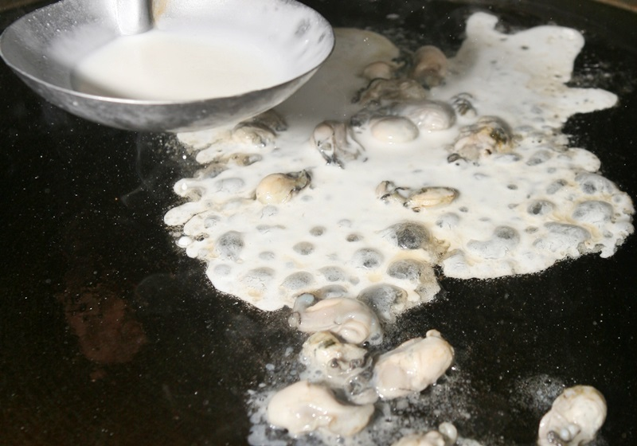

如何完成一道美味的蚵仔煎?!
請準備以下6樣食材
請將下述粉及水充份混合
美味的精髓
請按步就班
| A |
鮮蚵以鹽水洗淨，去除沾黏在蚵仔上的小碎粒與黏液，再將水分瀝乾備用。小白菜清洗後切小段。
POINT!! 鮮蚵盡量挑選肥大且飽滿的，避免過小的鮮蚵一下鍋就縮掉。注意水份必須盡量瀝乾，以免下油鍋時會爆與噴油。 |
|
| B |
再視情況添加一點油，保持鍋內油亮以免變焦。
POINT!!鮮蚵與粉水都容易吸油，若不添油則會過乾且焦，這樣的蚵仔煎就不好吃了。 |
|
| C |  |
取適量油熱鍋，待鍋熱、油熱後放入薑末爆香後，下鮮蚵稍微炒，直到鮮蚵半熟、微微變色後，加入粉漿，將蚵仔覆蓋上薄薄一層。
POINT!!油不夠熱則加入粉漿時，不易凝固。 |
| D | NO PICTURE | 粉水凝固後，把打散的蛋液均勻淋在蚵仔上，邊緣稍微凝固、變色後，加入小白菜，上蓋靜置燜一下。 |
| E |
醬料材料混合均勻，淋在蚵仔煎上方即可。
POINT!!若想改做蝦仁煎，蝦仁可選用紅蝦仁，色澤粉紅較具賣相。去腸泥洗淨後入滾水汆燙3～5秒即起，以冷水沖洗後保有Q度與口感。蝦仁煎的做法與蚵仔煎相同 |
|
| F |
待粉漿煎到變色後，翻面將青菜覆蓋，靜置煎5～6秒，即可盛盤。
POINT!!青菜不可悶煎過久，不但會縮也會變爛，嚴重影響口感！ |
|
| G |
粉漿食材用打蛋器調勻，拌勻備用。
POINT!! 粉漿可以依個人喜好，加入少許的米酒、白醋和香油提味，或是加入少許的鹽巴增添鹹味，能讓粉漿吃起來更香。 |
完成1道美食囉!